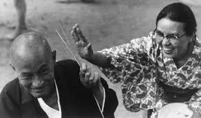
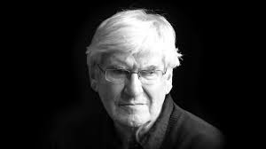

A Few People in my Inner Council
I've read in many places (but can't seem to find where) that one way to figure out what to do with yourself in confusing times is to keep an inner council of wise people you admire. It seems a little hokey to have a group of historical (or still living) figures living in your imagination giving you high fives and advising on whether your latest boo deserves a fifth date. It sounds kind of dumb when said aloud, but if you can get past the seeming childishness of having the grown-up version of imaginary friends, it can actually be a useful way to draw inspiration, clarify personal values, and strengthen character.
In order to cultivate this inner council, I grabbed photos of people that I admired from Google Image Search (while my boss wasn't looking) and put it on my personal flash drive. When I got home, I would spend time looking at the pictures and thinking about the things that I admired about each of them. This list isn't comprehensive, but maybe it'll give you an idea about whether this kind of thing is for you or not.
Jaron Lanier
Jaron Lanier was a tech pioneer involved in the earliest days of virtual reality programs. These days he gives talks and writes about the consequences of technological design choices on everyday people. He is currently advocating for people to delete their social media accounts due to their algorithms promoting anger and fear as a way of maximising user engagement. I feel like he's got a point, and I really appreciate his honesty and forward-thinking into technology and society. I'm still not going to delete my Twitter account, though.
Reggie Watts
Reggie Watts is equal parts bonkers, brilliance, and heart. His ability to make beatbox grooves topped with absurdist lyrics is unparalleled. He seems to be creativity personified, all while radiating a mischievous kindness. It's like he was born to help us rediscover playfulness and joy.
Shunryu Suzuki
Author of the classic Zen Mind, Beginners Mind, Shunryu Suzuki embodies qualities of peace and openness. He advocates for never losing beginner's mind, which is applicable to anybody, whether you're a Zen practitioner or a web developer. We can always learn more, and it is at the times when we think we have all the answers that we're most likely to miss important details.
Shinzen Young
Shinzen Young is an American meditation teacher whom I affectionately call a "magical nerd." Starting off as a geeky kid in love with Japanese culture, he traveled to Japan and endured grueling Shingon initiation practices of isolation and winter ice baths and in a quest for enlightenment. Thankfully, his meditation teaching is not so severe, using scientific language to make Eastern practices more understandable to a Western audience.
Edgar Wright
Edgar Wright is a British filmmaker most known for his films Shaun of the Dead and Hot Fuzz. His films are characterized by quick cuts, hilarious dialogue, and well-planned foreshadowing. He is quite influential, and his visual style is influencing such American comedies as This Is The End and Game Night.
Keith Johnstone
Keith Johnstone is the author of the book Impro, which is one of the most insightful books I've ever read. On the surface, it is about improvisational theater, but it is about far more, including education, psychology, and social interaction. Once I realized that all everyday interactions with other people could be viewed as an improvisational theater game, it became easier to notice when I was being a jerk and why when I otherwise wouldn't have had that awareness.